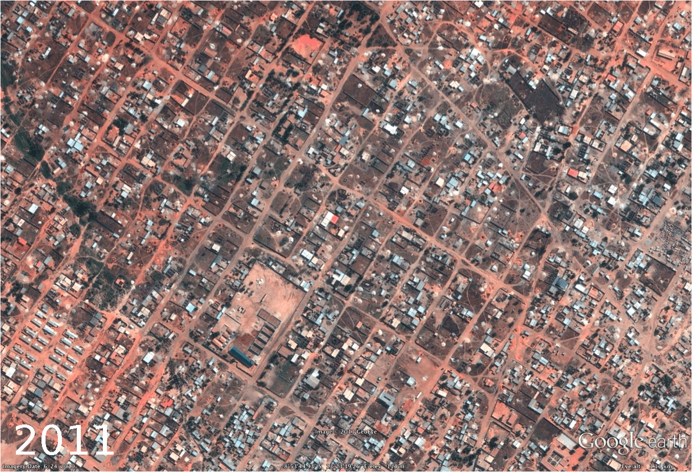

Satellite Image Analysis
Mapping Changing Land Patterns using Satellite Images


Agricultural land availability is undergoing dramatic changes across the globe. This phenomenon is more rampant in developing world where rapid economic growth and increasing population is resulting in unplanned development. Loss of arable land has a direct impact on food security. Most developing regions are also predominantly agrarian economies and changes in arable land can significantly impact food production and availability. We developed an automated satellite image analytics tool that can leverage publicly available satellite image data sources to provide a fine-grained longitudinal analysis of changes in land pattern in a given region. Our goal is to design a data analytics system that can understand the longitudinal relationship between changes in agricultural land availability patterns in a given small geographic area and its corresponding impact on food production. This paper is specifically contextualized for the region of West Bengal, traditionally considered one of the most fertile areas in the world being in the delta of the Gangetic plains. We used a corpus of satellite images gathered from Google Earth, which maintains updated repository of satellite images along with archives of older images across the globe. Based on detailed food production data gathered in collaboration with the bureau of statistics of West Bengal, we analyze the correlations between changes in agricultural land patterns and corresponding changes in food production at fine-grained district granularities. The key building block of our analytics tool is a satellite image analysis engine that can analyze potentially noisy satellite images and provide fine-grained classification of regions within each image into different categories such as: arable land, water body, developed land, forest etc. Given historical data about the same location, the image analysis engine can provide a detailed analysis of land pattern changes. Our engine can detect such changes at different location granularities (small region, district, state level etc.). In the case of West Bengal, we obtained data over a 13 year time period from 2000-2012 and could track land evolution over this entire time period. We correlate this land change pattern with food production data over the same time period gathered by the Bureau of Statistics in the government. This tool can be helpful to policymakers to monitor the changes in the land pattern and take appropriate steps if any drastic changes are noticed.

Publications
People
Sunandan Chakraborty
Courant Institute of Mathematical Sciences, New York University
Lakshminarayanan Subramanian
Courant Institute of Mathematical Sciences, New York University
Center for Technology and Economic Development, NYUAD
Yaw Nyarko
Center for Technology and Economic Development, NYUAD